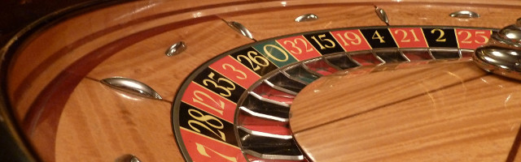

The Roulette Tree Explained
 "Wheel of Fortune" by Zdenko Zivkovic, CC-BY 2.0
In this text, I'll explain the dynamic roulette wheel problem, along with one solution to the problem, namely the roulette tree. Its speed is asymptotically faster than any other standard structure solving the same problem. However, as constant factors and average runtimes are more imporant in practice, we will also compare the roulette tree empirically against other solutions.
The Dynamic Roulette Wheel Problem
Many people already know what a roulette wheel is, and what it is used for: You have a circle, divided into some number of slots. The different slots usually have the same size and thus have same probability of being chosen in a random spin. Having different sizes on different slots is not unheard of, but is less common: The result is that the larger slots have higher probability of being picked, whereas smaller slots have lower probability.
In the real world, roulette wheels are (usually) static: Slots aren't removed, added or resized. Consequently, static roulette wheels are very easy to simulate.
A dynamic roulette wheel on the other hand, have the possibility to resize, insert or remove elements on the fly. I'll focus on fast insertion and removal, as resizing seems to be of limited use as of now.
Relative Probability
So, what does it mean to actually remove or insert a slot? For a roulette wheel, we can imagine this in two different ways:
- Grey out the removed slot. When spinning the wheel, we spin it until we hit a non-grey slot. For insertion, this is like "ungreying" a slot we've always had on the roulette wheel.
- Remove the slot, and scale the other slots uniformly up, so that they now fill the whole circle again. For insertion, this is the same as inserting the slow, and scale the other slots uniformly down.
Both of these give the desired result and the same probabilities, so which one we pick in practice would be related to practicalities. It turns out that the second way handles both performance and complexity well, mainly for two reasons:
- Imagine that we split the roulette tree up into 100 uniform slots, and remove 98 of the slots. The two slots left would obviously have a 50% chance of being chosen. However, in 98% of the times we pick a slot, we pick a greyed out one and we would have to roll again! On average, we would have to roll the wheel 50 times to get one of them, which is inefficient.
- How would we add in new slots? We could imagine that we have a
"buffer" of slots available when making a new roulette wheel. However,
what size would the additional slots be in, and how many should there
be? In theory, there must be an infinte number to accomodate all
different possibilities!
In addition, this slot buffer, regardless of its size, would hurt performance for the same reasons the previous point did.
As a result, all dynamic roulette wheel simulations use the second solution: Relatively scale all the slots based upon the total size of the slots.
| Name | Slot size | Probability with a | Probability without a |
|---|---|---|---|
| a | 4 | \(\frac{4}{20} =\) 0.2 | 0 |
| b | 2 | \(\frac{2}{20} =\) 0.1 | \(\frac{2}{16} =\) 0.125 |
| c | 3 | \(\frac{3}{20} =\) 0.15 | \(\frac{3}{16} =\) 0.1875 |
| d | 6 | \(\frac{6}{20} =\) 0.3 | \(\frac{6}{16} =\) 0.375 |
| e | 2 | \(\frac{2}{20} =\) 0.1 | \(\frac{2}{16} =\) 0.125 |
| f | 3 | \(\frac{3}{20} =\) 0.15 | \(\frac{3}{16} =\) 0.1875 |